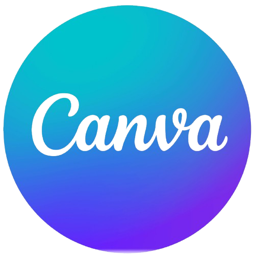

HABILIDADES



Sobre Mi
Actualmente, estoy profundizando mis conocimientos en JavaScript y Java, enfocándome en su aplicación para la automatización de pruebas. Mi objetivo es seguir mejorando mis habilidades técnicas y asegurar la calidad en los proyectos que desarrollo.
Me apasiona crear soluciones eficientes y de alta calidad, tanto en el desarrollo de software como en la automatización de pruebas. Estoy capacitandome continuamente en tecnologías y herramientas que me permitan complementar mi perfil de desarrolladora y QA.
Soy autodidacta, responsable y comprometida, siempre en busca de nuevos desafíos. Podes encontrar mis trabajos en la sección de proyectos.
Descargar CVExperiencia | Educación
Desarrollar y mantener aplicaciones en .NET (ASP.NET, MVC, Razor).
Corregir bugs y optimizar funcionalidades en C# y LINQ.
Implementar interfaces de usuario utilizando Razor, Kendo UI y Knockout.js.
Colaborar con equipos para mejorar la experiencia de usuario y la funcionalidad del sistema.
Planificar y ejecutar mejoras continuas en los procesos de desarrollo.
Este curso me permitió entender cómo integrar pruebas en los pipelines de CI/CD. Aprendí a utilizar Jenkins y GitHub Actions para definir y ejecutar pruebas automatizadas, así como a generar reportes que ayudan a mejorar la calidad del software.
En este curso, aprendí a realizar peticiones HTTP básicas como GET, POST, PUT y DELETE con Postman. Me familiaricé con la gestión de headers y parámetros, así como con la autenticación y autorización en las peticiones. También descubrí cómo documentar y probar APIs, crear scripts de prueba y automatizar procesos. Aprendí a trabajar con colecciones y a usar Newman para ejecutar mis pruebas desde la terminal. Además, desarrollé habilidades para crear mocks que facilitan la colaboración entre testers y desarrolladores.
En este curso, aprendí a usar Selenium con Java desde cero en Visual Studio Code. Exploré diferentes implementaciones del Page Object Model, adaptándolas a las necesidades del proyecto. Integré Cucumber para facilitar la colaboración en el equipo y apliqué las mejores prácticas de BDD y UI Automation, lo que me permitió evitar problemas comunes en proyectos de automatización. Aprendí a definir pasos, utilizar expresiones regulares para mejorar las características y trabajar con tags y reportes. Además, profundicé en el uso de waits, el manejo de dropdowns, errores y grillas con Selenium WebDriver. También aprendí a gestionar iFrames, subir archivos y aplicar assertions, lo que me brindó una base sólida en automatización de pruebas.
En este curso, aprendí los principios de la Programación Orientada a Objetos (POO) aplicados al Automation Testing, incluyendo Encapsulamiento, Herencia, Abstracción y Polimorfismo. También trabajé con GitHub para gestionar código de manera profesional, creando repositorios y ramas, y utilizando operaciones como Add, Commit y Push. Además, adquirí conocimientos sobre los principios SOLID y técnicas de programación como condicionales, loops y el manejo de excepciones con Try/Catch.
Realizar el relevamiento, análisis y diseño de procesos de negocio y sistemas informáticos, asegurando una adecuada comprensión y optimización de los mismos.
Diseñar y elaborar diagramas de flujo (To Be y As Is) para visualizar y documentar los cambios necesarios en los procesos.
Documentar los requerimientos funcionales de acuerdo con los lineamientos de la metodología del proyecto.
Identificar y gestionar desvíos como cambios de alcance o demoras, y anticipar problemas que puedan afectar el desarrollo del proyecto.
Dar seguimiento al desarrollo del proyecto, reportando cualquier issue a los referentes del proyecto.
Definir y documentar casos de prueba para asegurar la calidad del sistema.
Realizar pruebas funcionales en colaboración con los desarrolladores y participar en las UAT (User Acceptance Testing).
Documentar los resultados de las pruebas, asegurando que cumplan con el alcance definido por el proyecto.
En el curso, adquirí habilidades para trabajar con PHP y desarrollar un sistema CRUD (Crear, Leer, Actualizar, Eliminar) en una página de pedidos de comidas. Utilicé Apache como servidor y gestioné bases de datos para almacenar y manipular información, creando una plataforma que permite realizar operaciones como agregar, modificar y eliminar productos.
En el curso, aprendí a analizar requerimientos con precisión, aplicar criterios de aceptación y trazabilidad para asegurar las pruebas. También adquirí experiencia en la definición de historias de usuario, lo que me permitió orientar las pruebas desde la perspectiva del usuario final. Utilicé herramientas como Spira Plan para crear casos de prueba manuales y Rapise para automatizar esas pruebas. Además, realicé análisis de rendimiento con JMeter de Apache, abarcando tanto pruebas funcionales como no funcionales.